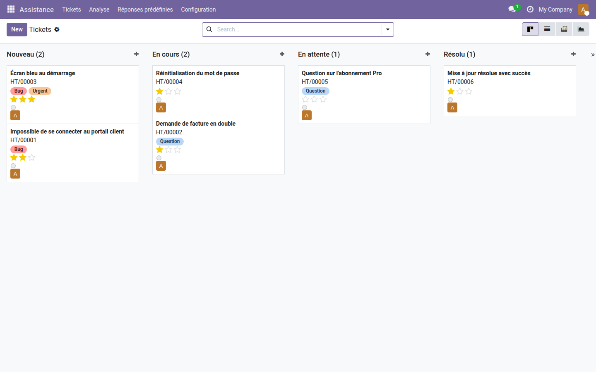
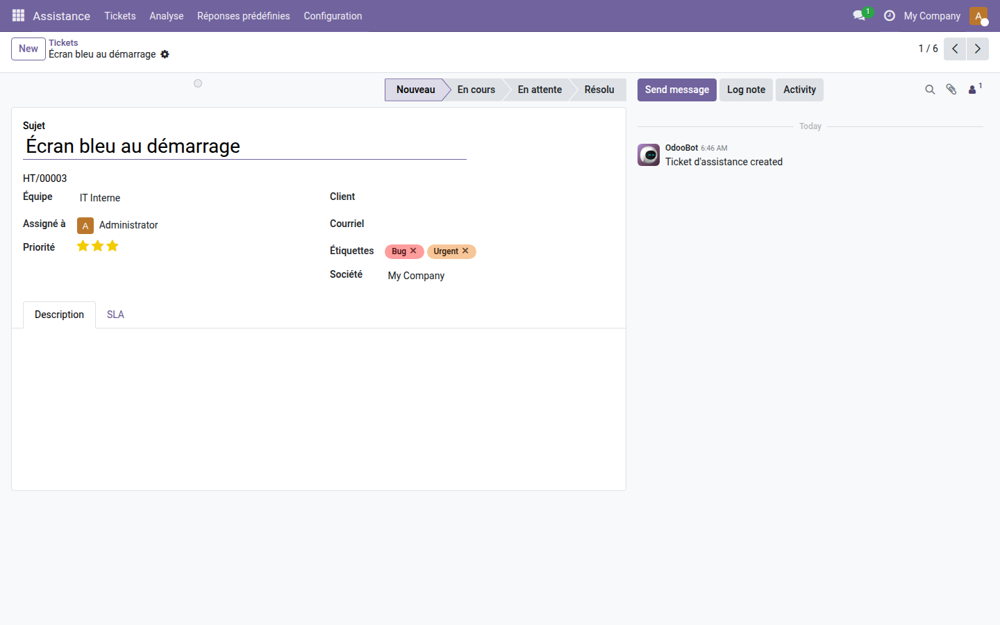
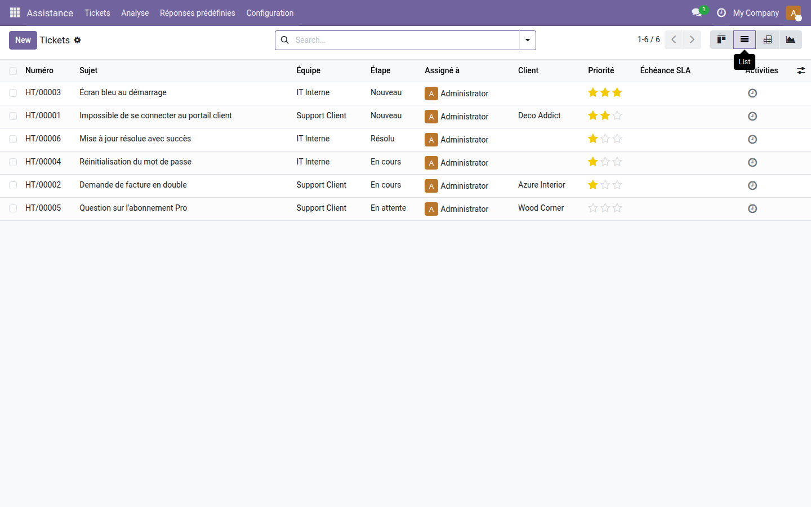

Helpdesk — Oski
Centralize every customer request as a structured ticket: nothing falls through the cracks anymore, every issue has an owner and a resolution date.
Without a dedicated tool, support requests get scattered across emails, calls and handwritten notes. Some go unanswered for days, others are handled twice by two different agents — and nobody really knows what is open, blocked or solved. The result: frustrated customers and a support team flying blind.
What it adds
- ✅ Automatically numbered tickets — subject, priority (low to urgent), customer, team, HTML description. Every ticket has a reference number from the moment it is created.
- 📧 Creation by email — set up an alias per team (e.g. support@yourcompany.com): every incoming email becomes a ticket with no manual action.
- ⚖️ Workload-balanced assignment — in automatic mode, the new ticket is assigned to the agent with the fewest open tickets among the team members.
- 📊 Kanban view by stage — see all tickets by status at a glance (New / In Progress / Solved…), with a colored blocked indicator and the assigned agent's avatar.
- 🔍 Advanced filters and grouping — instantly find "my tickets", unassigned ones, open ones; group by team, stage, agent or priority.
- 💬 Built-in chatter and activities — internal discussions, full change history and follow-up activities (call, email, meeting) right on each ticket.
- 📈 Pivot and graphs — analyze how tickets are distributed by team, stage and priority without leaving the interface.
In screenshots
Kanban pipeline — all tickets grouped by stage, with colored tags and priority stars.

Ticket form — reference number, team, priority, tags and traceability chatter.

List view — summary table with number, subject, team, stage, assignee, customer, priority and SLA.

Why adopt it
- 100% open source, no external dependency — installs on any Odoo 19 Community or Enterprise instance (only requires the base and mail modules).
- Up and running in minutes — the stages (New, In Progress, Solved) and the numbering sequence are preconfigured at installation.
- Extensible architecture — this module is the core of the Oski Helpdesk suite. Add Pro add-ons as your needs grow: SLA, customer portal, canned replies, satisfaction rating, advanced reports.
- Full traceability — every change of priority, stage or assignment is recorded in the chatter; ideal for internal audits and quality monitoring.
Part of the Oski Helpdesk suite
This open-source module is the foundation. Complete it with the Pro add-ons to turn your support into a professional help center:
- oski_helpdesk_sla — SLA policies: target times, automatic alerts and escalations ($39).
- oski_helpdesk_website — Customer portal: your customers create and track their tickets from your website ($39).
- oski_helpdesk_canned — Canned replies: save time with reusable reply templates ($29).
- oski_helpdesk_rating — Satisfaction rating: collect customer feedback when each ticket is closed ($29).
Available in the Helpdesk Pro bundle at $119 (6 add-ons, -39%). See the full suite on apps.odooskills.com.
License LGPL-3 — open source. Compatible with Odoo 19.0. Support: apps@odooskills.com.